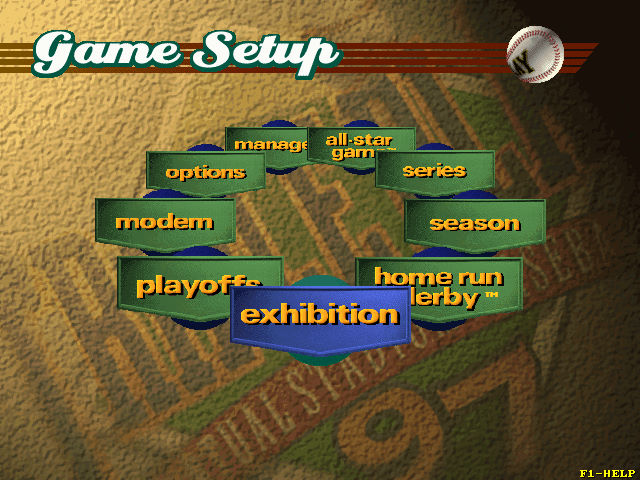
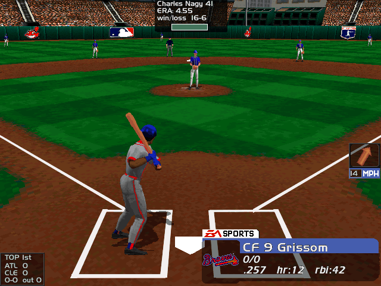

名稱：美國職棒大聯盟97／97美國職棒大聯盟／97職棒大聯盟／三殺：97美國職棒大聯盟 (Triple Play 97，英文版) 簡介：EA 1996年出品的棒球遊戲 [待補]。   保護：光碟 備註：安裝時如果出現"Your hard disk is full"訊息，請更換成DosBox 0.74或SVN安裝。 檔案：crack.rar = 破解檔（較新版），需將光碟上所有檔案拷貝到安裝目錄。

